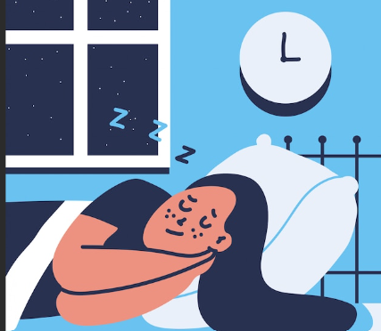

A Importância da Qualidade do Sono
A qualidade do sono é fundamental para a saúde física e mental. Um bom sono é caracterizado por ser profundo, restaurador e suficiente para permitir que o corpo e a mente se recuperem. Aqui estão alguns fatores importantes relacionados à qualidade do sono:
- Duração Adequada: A maioria dos adultos precisa de 7 a 9 horas de sono por noite. Crianças e adolescentes geralmente precisam de mais. Dormir consistentemente essa quantidade é crucial para um descanso adequado.
- Sono Profundo e REM: Durante o sono, passamos por diferentes estágios, incluindo o sono profundo (onde ocorre a maior parte da recuperação física) e o sono REM (essencial para a memória e a saúde mental). A qualidade do sono melhora quando passamos tempo suficiente em cada um desses estágios.
- Ambiente de Sono:
- Escuridão: Um quarto escuro ajuda a promover a produção de melatonina, o hormônio que regula o sono.
- Temperatura: Um ambiente fresco, geralmente entre 16-20°C, é ideal para o sono.
- Silêncio: Ruídos podem interromper o sono, então um ambiente tranquilo é importante.
- Conforto: Um colchão e travesseiros confortáveis são essenciais para um sono de qualidade.
- Rotina Consistente: Manter um horário regular para dormir e acordar ajuda a regular o relógio biológico e melhora a qualidade do sono. Tentar dormir e acordar à mesma hora todos os dias, inclusive nos fins de semana, é ideal.
- Higiene do Sono:
- Evitar eletrônicos antes de dormir: A luz azul emitida por telas de smartphones, computadores e TVs pode interferir na produção de melatonina. É recomendado evitar esses dispositivos pelo menos uma hora antes de dormir.
- Alimentação leve à noite: Evitar refeições pesadas, cafeína e álcool próximo da hora de dormir pode prevenir distúrbios no sono.
- Relaxamento: Técnicas de relaxamento como meditação, leitura ou um banho quente podem ajudar a preparar o corpo para o sono.
- Evitar Cochilos Longos: Cochilos durante o dia, especialmente se forem longos, podem interferir no sono noturno. Se precisar cochilar, tente limitar a soneca a 20-30 minutos.
- Gerenciamento do Estresse: Estresse e ansiedade podem dificultar o sono. Práticas de relaxamento ou técnicas como a respiração profunda e a meditação podem ajudar a acalmar a mente antes de dormir.
- Exercício Regular: A prática de atividades físicas durante o dia pode melhorar a qualidade do sono, mas é melhor evitar exercícios intensos perto da hora de dormir, pois podem deixar o corpo alerta.
Por que Dormir Bem é Essencial?
Dormir bem é essencial para a saúde e o bem-estar geral. Uma boa noite de sono contribui para a recuperação física, a função cognitiva, o equilíbrio emocional e a qualidade de vida.
